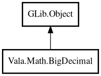

BigDecimal
Object Hierarchy:

Description:
public class BigDecimal : Object
Immutable arbitrary-precision decimal value object.
Content:
Static methods:
Creation methods:
Methods:
- public BigDecimal abs ()
Returns absolute value.
- public BigDecimal add (BigDecimal other)
Returns sum of this value and other.
- public int compareTo (BigDecimal other)
Compares this value to other.
- public BigDecimal divide (BigDecimal other)
Returns quotient of this value divided by other.
- public BigDecimal divideWithScale (BigDecimal other, int scale)
Returns quotient with explicit scale.
- public BigDecimal mod (BigDecimal other)
Returns remainder of this value divided by other.
- public BigDecimal multiply (BigDecimal other)
Returns product of this value and other.
- public BigDecimal negate ()
Returns value with inverted sign.
- public BigDecimal pow (int exponent)
Returns this value raised to exponent.
- public int scale ()
Returns fractional scale.
- public BigDecimal subtract (BigDecimal other)
Returns this value minus other.
- public string toString ()
Returns normalized decimal representation.
Inherited Members:
All known members inherited from class GLib.Object
- @get
- @new
- @ref
- @set
- add_toggle_ref
- add_weak_pointer
- bind_property
- connect
- constructed
- disconnect
- dispose
- dup_data
- dup_qdata
- force_floating
- freeze_notify
- get_class
- get_data
- get_property
- get_qdata
- get_type
- getv
- interface_find_property
- interface_install_property
- interface_list_properties
- is_floating
- new_valist
- new_with_properties
- newv
- notify
- notify_property
- ref_count
- ref_sink
- remove_toggle_ref
- remove_weak_pointer
- replace_data
- replace_qdata
- set_data
- set_data_full
- set_property
- set_qdata
- set_qdata_full
- set_valist
- setv
- steal_data
- steal_qdata
- thaw_notify
- unref
- watch_closure
- weak_ref
- weak_unref